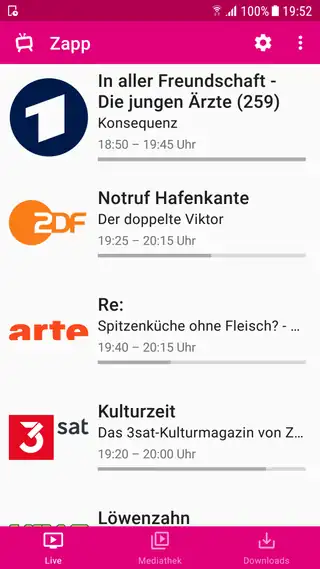
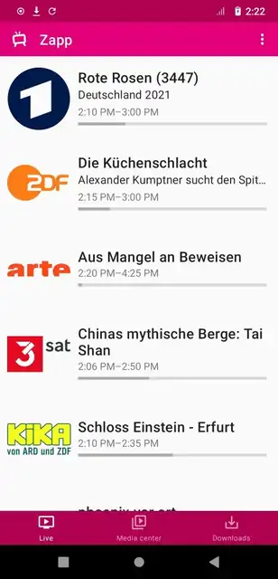

Zapp
صوت وفيديو وموسيقى
Zapp is a part of MediathekView and gives you easy access to many German public broadcasting stations. Watch ARD, ZDF and other channels live or from their media centre. Features: * Android client for MediathekView * Live streams of over 30 channels * Adaptive streaming * Quick channel transition *
✓ ترخيص مفتوح (MIT) · آخر تحديث: 2026-02-05
9.2.0الإصدار
4.6 MBالحجم
MITالرخصة
Open in Kanzتحميل APK (4.6 MB)
Download APK
SHA-256: 26345267697e867e41c8392b665d4f4dd0bef8341f27a0c41d527ba2326f1e22


امسح الكود لفتح صفحة التطبيق
Scan to open this app page
لو كنز مش متثبت عندك: نزّل متجر كنز.
Not installed? Get the Kanz store.